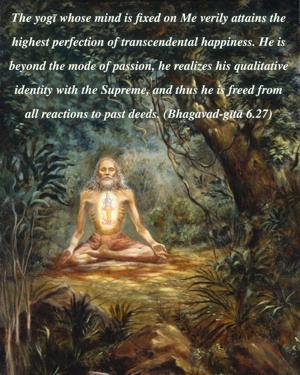
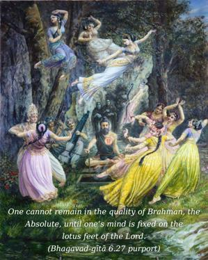

The yogī whose mind is fixed on Me verily attains the highest perfection of transcendental happiness. He is beyond the mode of passion, he realizes his qualitative identity with the Supreme, and thus he is freed from all reactions to past deeds.


Brahma-bhūta is the state of being free from material contamination and situated in the transcendental service of the Lord. Mad-bhaktiṁ labhate parām (Bg. 18.54). One cannot remain in the quality of Brahman, the Absolute, until one’s mind is fixed on the lotus feet of the Lord. Sa vai manaḥ kṛṣṇa-padāravindayoḥ. To be always engaged in the transcendental loving service of the Lord, or to remain in Kṛṣṇa consciousness, is to be factually liberated from the mode of passion and all material contamination.